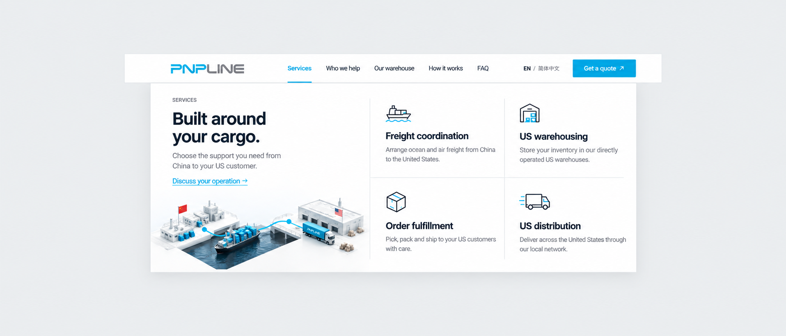
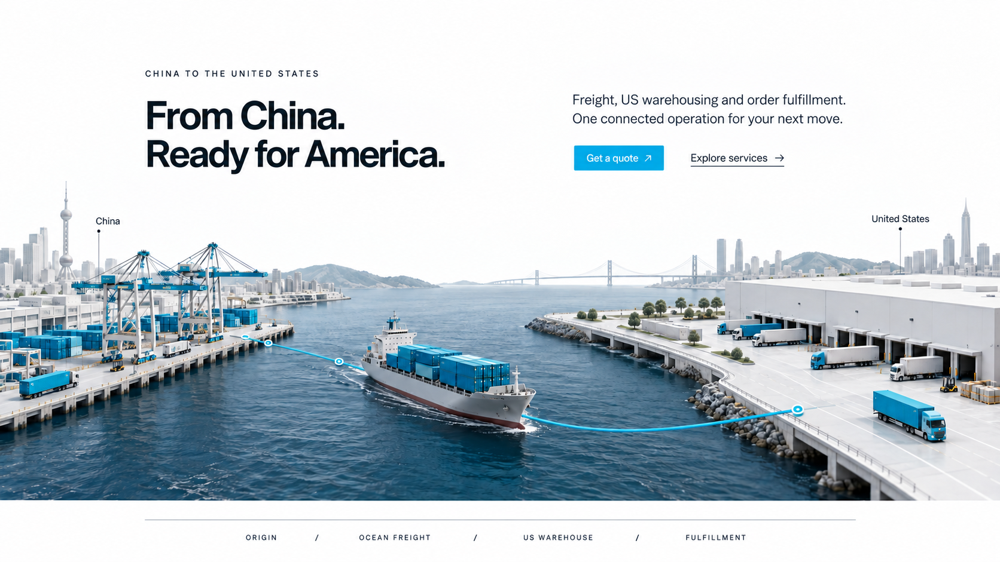
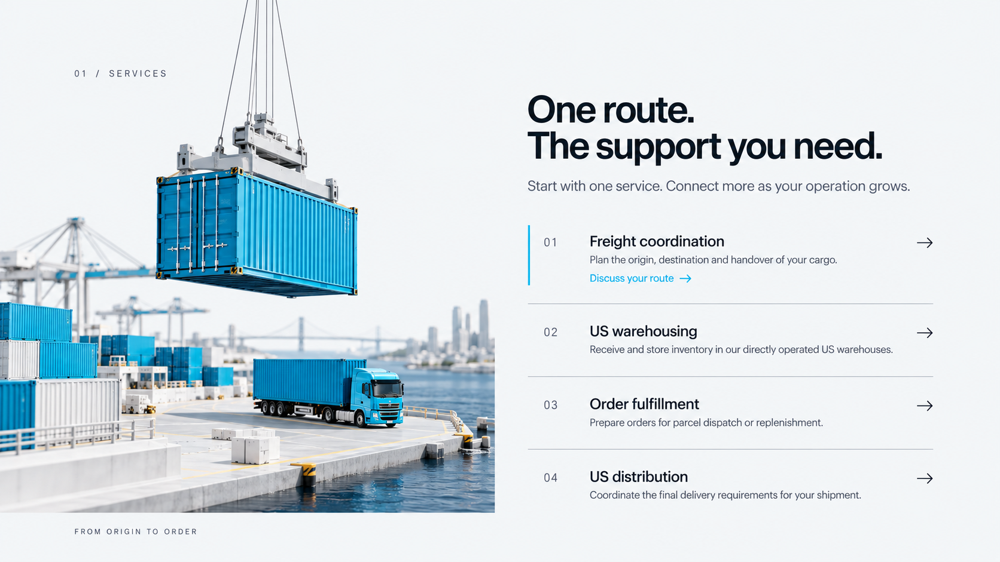
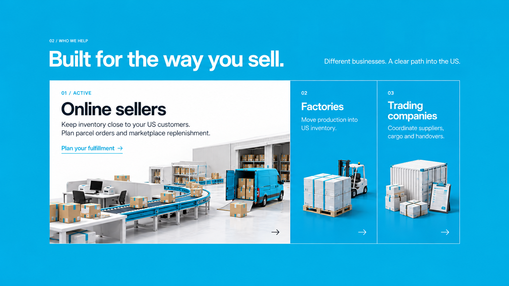
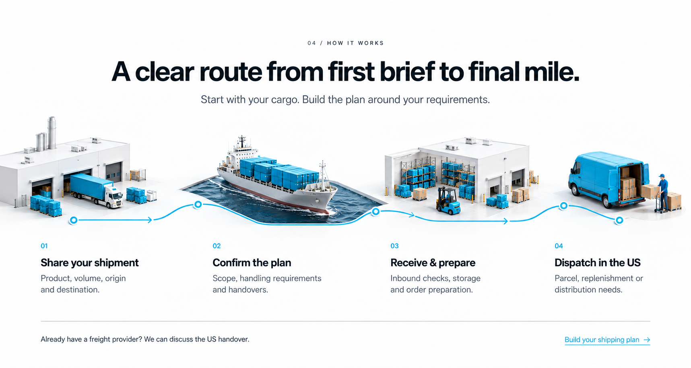
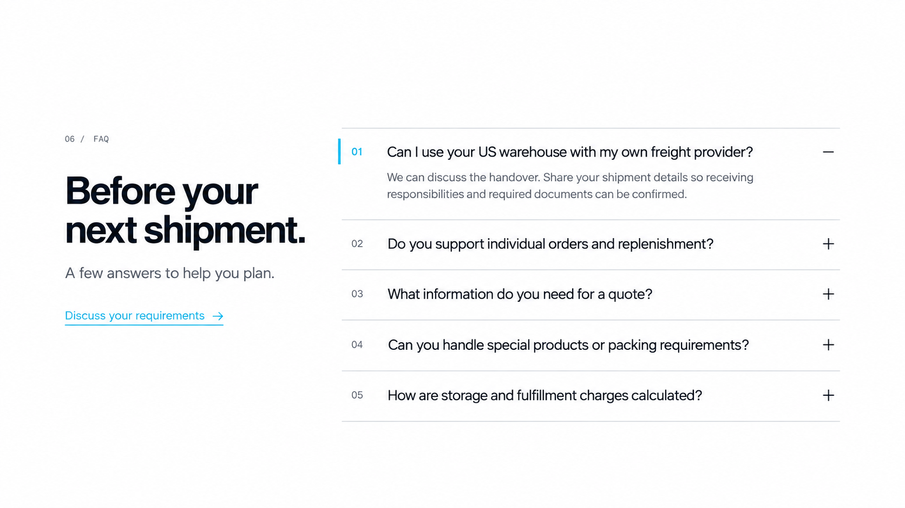
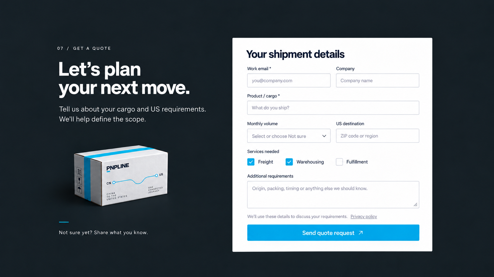
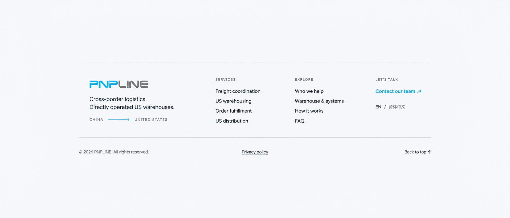

중국 출고부터 미국 주문 이행까지,
하나의 흐름으로 이어지는 PNPLINE.
Setby 피그마 레퍼런스의 타이포 등장, 물류 오브젝트와 컬러 전환을 PNPLINE의 시안 블루로 확장한 영문 랜딩페이지 컨셉입니다. 10개 섹션을 각각 독립된 가로형 이미지로 제작했습니다.
이미지는 구도·이미지 표현을 검토하는 시각 참고안입니다. 정확한 폭·여백·글자 크기는 명세 기준으로 구현합니다. 아래 모션 스터디는 동작 방향을 보여주는 별도 예시이며, 섹션 이미지 자체는 정지 이미지입니다.
같은 디자인에 움직임을 더하는 방법
원본의 동작 언어를 적용한 간단한 세 가지 예시입니다.
Ready for America.
단어별 40ms 지연 · 600ms 이동
JOURNEY.
4개 패널 · 60ms 지연 · 650ms 이동
US warehousing
Receive and store inventory in our directly operated US warehouses.
Order fulfillment
Prepare orders for parcel dispatch or replenishment.
US distribution
Coordinate the final delivery requirements for your shipment.
클릭·키보드로 선택 · 열린 항목에 시안 포인트
모션 감소 설정에서는 이동 효과를 생략합니다. 실제 사이트에서는 히어로 스크롤 연동 외에 자동 반복이나 화면 전체를 가리는 전환을 상시 적용하지 않습니다.

작은 로고와 견적 버튼을 유지하고, 서비스 메뉴를 펼치면 업무 범위와 이동 경로를 한 번에 확인합니다.
클릭·키보드로 메뉴를 엽니다. 220ms 동안 opacity와 y: 8→0을 적용하고, Escape로 닫습니다.
80–88px 내비게이션 · 가운데 정렬한 서비스 메뉴

항만, 선박, 미국 창고를 하나의 미니어처 장면으로 연결합니다. 영상은 화면 전체 너비를 쓰고 제목과 버튼은 콘텐츠 그리드에 맞춥니다.
제목을 단어 단위로 40ms씩 지연해 드러냅니다. 스크롤 위치를 중국 출고→해상→미국 창고→주문 출고 장면에 대응합니다. 정지하면 현재 장면을 유지합니다.
전체 너비 영상 · 72px 이하 제목 · 50px 견적 버튼

물류 오브젝트 옆에 네 가지 서비스를 배치합니다. 선택한 행에만 설명과 견적 연결을 펼쳐 반복 카드 구성을 피합니다.
행 선택은 클릭·키보드로 확정합니다. 280ms 높이 전환과 180ms opacity로 펼치며, 포인터 hover는 색상과 화살표만 예고합니다.
이미지와 4개 행 · 얇은 경계선 · 한 행 확장

온라인 판매자, 공장, 무역업체를 하나의 연속 패널로 보여줍니다. 선택한 업무 유형에 설명과 이미지를 집중합니다.
선택된 패널의 폭을 450ms 동안 넓힙니다. 마우스 hover, 키보드 focus와 클릭으로 동일한 정보를 확인하며 터치에서는 클릭으로 전환합니다.
연속 패널 60 / 20 / 20 · 시안 블루 전환

창고 단면과 세 가지 작업 위치를 연결합니다. 실제 WMS 화면을 대신하지 않는 업무 흐름 개념도입니다.
Receiving / Inventory / Dispatch 탭으로 해당 작업 핀과 경로를 강조합니다. 카메라 이동은 작은 범위에서 500ms, 설명은 200ms로 교체합니다.
넓은 단면 이미지 · 3개 탭 · 작업 핀

문의 준비부터 미국 출고까지 네 단계를 연결합니다. 서로 떨어진 카드 대신 하나의 경로가 업무 순서를 설명합니다.
구간 스크롤 진행률에 맞춰 경로를 그리고 단계별 라벨을 강조합니다. 사용자가 위로 스크롤하면 진행률도 되돌아갑니다.
4단계 가로 경로 · 공통 기준선 · 준비 정보

운송, 입고, 보관, 주문 처리, 배송의 견적 기준을 정리합니다. 고정 요율을 만들지 않고 필요한 정보를 문의로 연결합니다.
표의 정보는 즉시 읽을 수 있게 유지합니다. 섹션 제목에만 350ms 짧은 진입 효과를 적용하고 CTA 화살표는 hover 시 3px 이동합니다.
단일 비용 구성표 · 5개 항목 · 견적 CTA

기존 운송사와 미국 창고의 인계 질문을 먼저 보여줍니다. 왼쪽 안내와 오른쪽 질문 목록으로 정보 밀도를 조절합니다.
한 질문을 240ms 동안 펼칩니다. native details/summary 또는 aria-expanded 버튼을 사용하고, 모바일에서도 동일하게 작동합니다.
안내와 5개 질문 · 첫 질문 열림 · 그림 없는 휴지 구간

차콜 배경에 밝은 입력면을 배치하고 이메일, 화물, 물량, 목적지와 서비스 요구를 모읍니다. 미정 정보도 전달할 수 있게 합니다.
폼은 등장 애니메이션을 기다리지 않고 사용할 수 있게 합니다. 선택·오류·제출 진행·완료 상태를 각각 표시하고 오류 발생 시 해당 필드로 포커스를 옮깁니다.
작은 패키지 디테일 · 2열 폼 · 미정 선택

서비스, 주요 섹션, 문의, 언어 선택을 정리합니다. 넓은 여백과 작은 로고로 페이지를 차분하게 마칩니다.
Back to top은 400ms 이내로 이동합니다. 모션 감소 설정에서는 즉시 이동하고, 링크 underline과 focus 표시를 유지합니다.
4열 링크 · 14–18px 텍스트 · 얇은 경계선